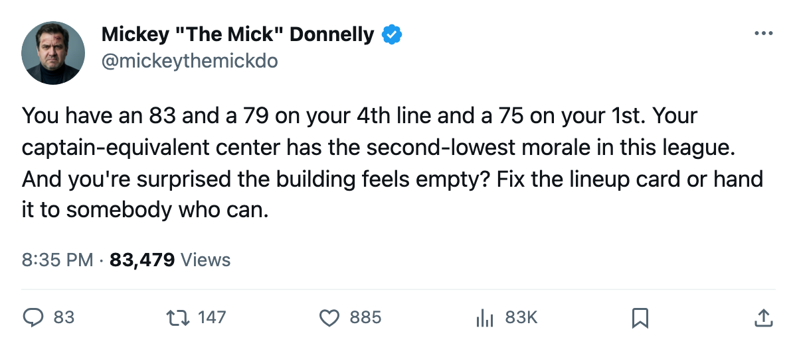
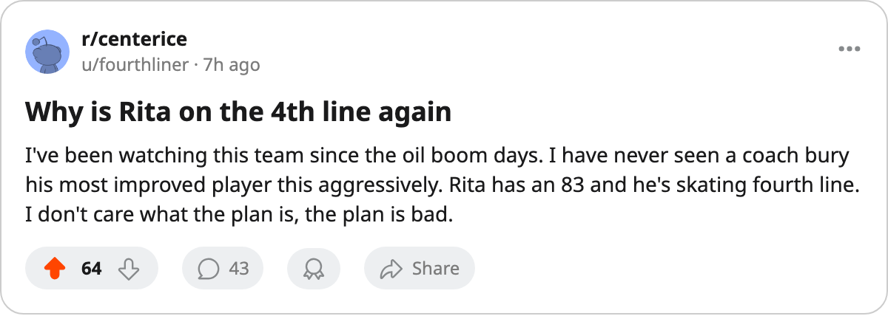

EDMONTON'S COACH PUTS HIS 83 ON THE 4TH LINE AND WONDER WHY HIS CENTER IS UNHAPPY
Jani Rita and Brad Isbister rate above Ethan Moreau. The lineup card buries them. Shawn Horcoff's morale sits tied for lowest in the league.
 Mickey "The Mick" DonnellyColumnist, ex-goalie · The Penalty Box
Mickey "The Mick" DonnellyColumnist, ex-goalie · The Penalty Box
The piece
 Edmonton Oilers are 0-3-2. They scored 17 goals and allowed 22 through 6 games. Their payroll is $42.61M, second-lowest in this league. And their coach has made a lineup card that makes you wonder if he can read a grading scale.
Edmonton Oilers are 0-3-2. They scored 17 goals and allowed 22 through 6 games. Their payroll is $42.61M, second-lowest in this league. And their coach has made a lineup card that makes you wonder if he can read a grading scale.
 Jani Rita81 has an 87... no. He sits at 83 on the Book's current grade. Up 8 on the Bureau's Development Index. He's 24 and he played 6 games and scored 2 points. Where does the coach put him? Fourth-line left wing. Below him, playing first-line right wing, is
Jani Rita81 has an 87... no. He sits at 83 on the Book's current grade. Up 8 on the Bureau's Development Index. He's 24 and he played 6 games and scored 2 points. Where does the coach put him? Fourth-line left wing. Below him, playing first-line right wing, is  Ethan Moreau73, a 75.
Ethan Moreau73, a 75.
Eight above. On the fourth line.
 Brad Isbister77 reads 79 and plays fourth-line center. Also above Moreau. Also buried.
Brad Isbister77 reads 79 and plays fourth-line center. Also above Moreau. Also buried.
The Morale Scale has one answer and nobody likes it
 Shawn Horcoff67 centers this team at $0.60M a year, a 69 overall, and his morale reads 72. Tied for lowest in the entire league with
Shawn Horcoff67 centers this team at $0.60M a year, a 69 overall, and his morale reads 72. Tied for lowest in the entire league with  Sebastien Charpentier72 in St. Louis and Chris Schmidt63 in Chicago. A 69 is a bottom-pairing guy. The Bureau has him there. But the man who's paying him 60 cents to be on this roster and watching his linemates get demoted while a lower-rated player keeps first-line minutes, that man's morale is at the floor.
Sebastien Charpentier72 in St. Louis and Chris Schmidt63 in Chicago. A 69 is a bottom-pairing guy. The Bureau has him there. But the man who's paying him 60 cents to be on this roster and watching his linemates get demoted while a lower-rated player keeps first-line minutes, that man's morale is at the floor.
You don't need a spreadsheet to tell you what's wrong in that room. You need the lineup card.
| Player | Position | Overall | Slot | Above whom |
|---|---|---|---|---|
| Jani Rita | LW | 83 | 4th line | Ethan Moreau (75, 1st line) |
| Brad Isbister | LW | 79 | 4th line | Ethan Moreau (75, 1st line) |
$10.65M a point is not cheap
Edmonton's payroll is $42.61M. They have 4 points. That's $10.65M per point, 15th in the league on cost-per-point. Not the worst number in hockey. But at a payroll this low, every wasted minute is a wasted dollar, and the dollars are thin here. 14,481 fans paid $81 tonight. They're watching a coach hide his two best wingers from the top six.
 Ales Hemsky81 sits at 83 too, up 9 on the Index, 22 years old, 4 points in 6 games. At least he's getting minutes. At least someone in that lineup has his name next to real ice time.
Ales Hemsky81 sits at 83 too, up 9 on the Index, 22 years old, 4 points in 6 games. At least he's getting minutes. At least someone in that lineup has his name next to real ice time.
Tonight they host  San Jose Sharks, who are themselves 1-2-1 and can't buy a win. This is the game where a coach has no excuse. Nobody's looking at the scoreline against San Jose and saying "well, they deserved it." They're looking at where Rita lines up and wondering if the bench knows what it's doing.
San Jose Sharks, who are themselves 1-2-1 and can't buy a win. This is the game where a coach has no excuse. Nobody's looking at the scoreline against San Jose and saying "well, they deserved it." They're looking at where Rita lines up and wondering if the bench knows what it's doing.

